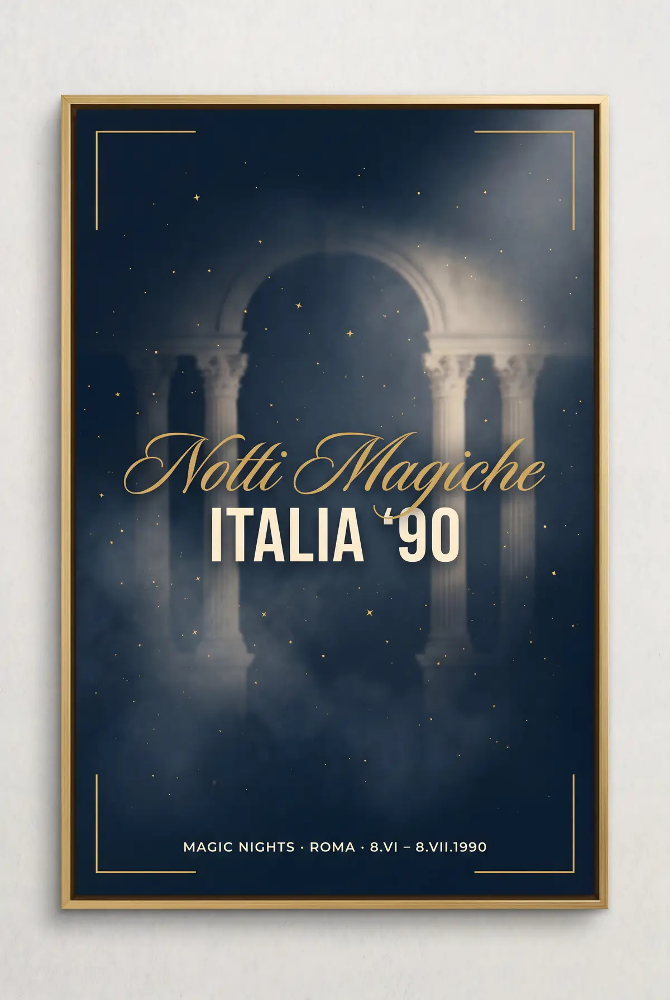
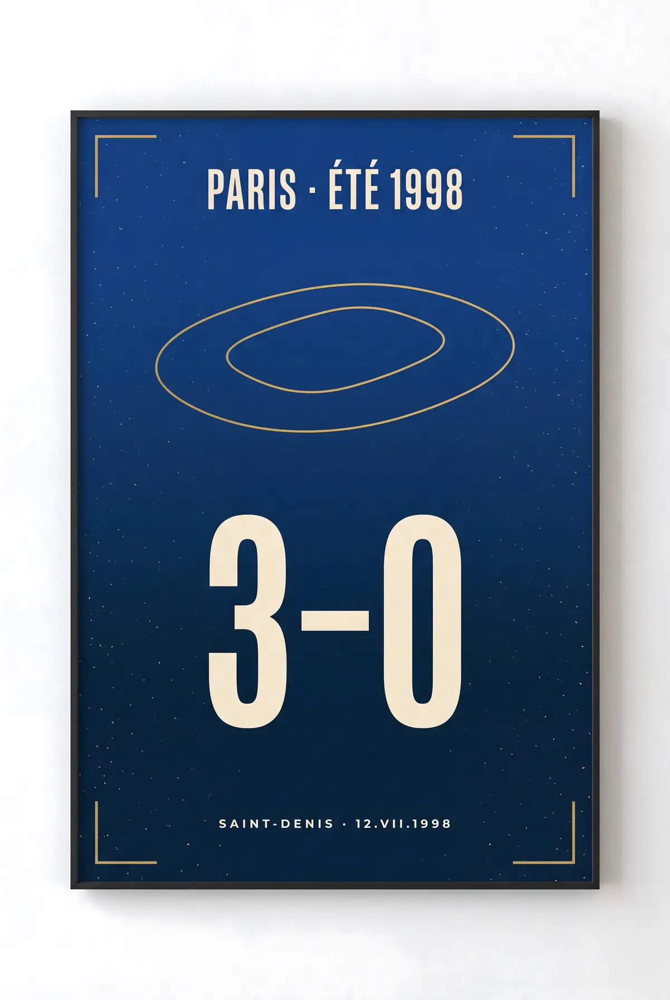

Recently Saved
Local Only

Archive

OCT 14, 2023
Pelé's Final Letter to New York
4 MIN READ • ARCHIVE

SEP 29, 2023
The Architecture of Total Football
12 MIN READ • TACTICS
Transfers

DONE
TRANSFERS
Midfield Anchor: The London Pivot
UPDATED 2H AGO
Your Library is Empty
Documents you bookmark will be archived locally on this device for offline reading.